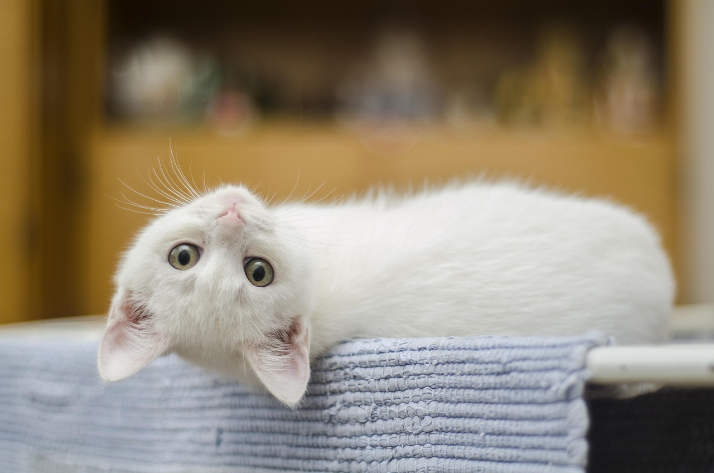
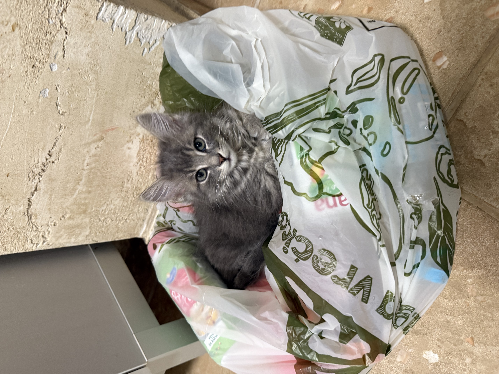
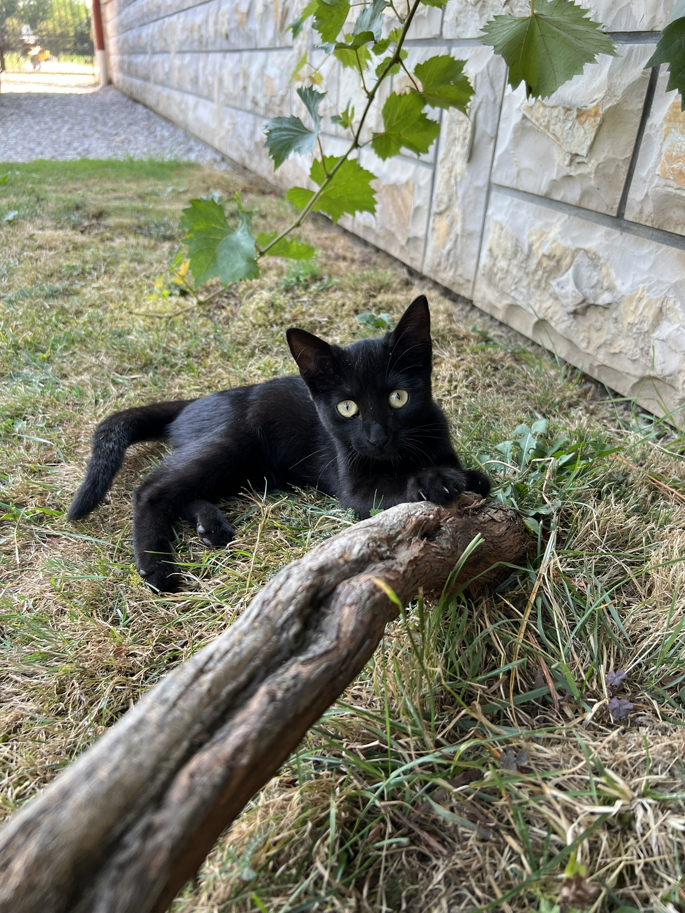
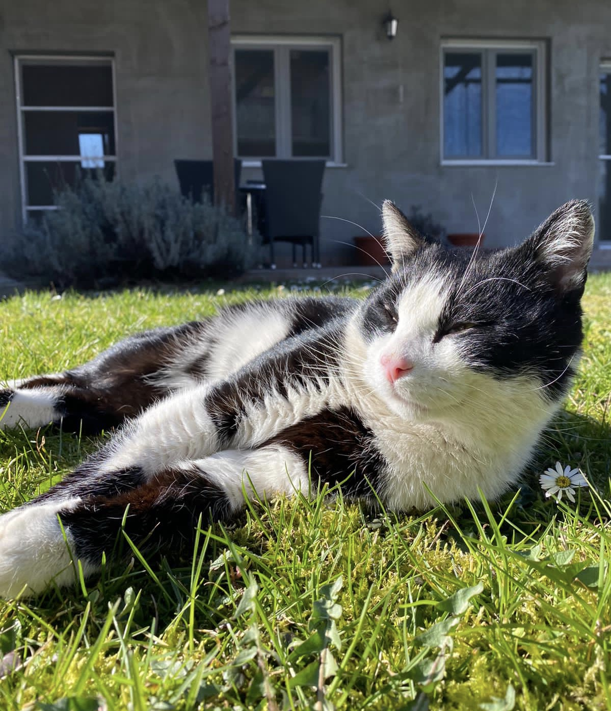
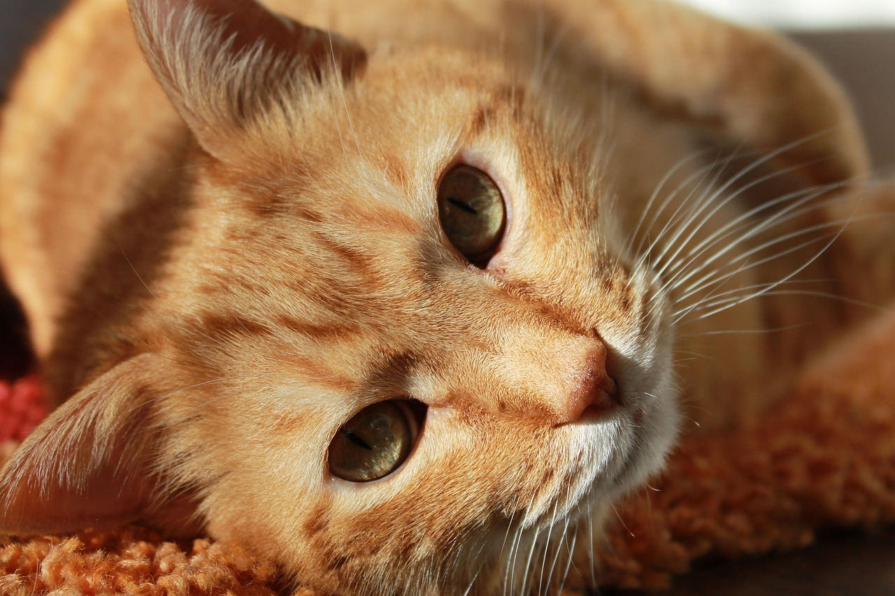

Ljubitelji mačaka često primjećuju zanimljivu stvar – čini se da mačke određene boje krzna imaju slične osobine. Iako znanost ne potvrđuje u potpunosti da boja krzna određuje karakter, dugogodišnja iskustva vlasnika pokazuju da se kod nekih boja često ponavljaju određeni obrasci ponašanja.
Naravno, svaka mačka je jedinstvena i njezin karakter oblikuju genetika, odgoj, okolina i iskustva kroz život. Ipak, zanimljivo je primijetiti kako se neke osobine često povezuju upravo s bojom krzna.
U nastavku otkrivamo kakav se karakter najčešće pripisuje različitim bojama mačaka!

Bijele mačke često ostavljaju dojam elegancije i smirenosti. Vlasnici ih opisuju kao nježne, pomalo osjetljive i vrlo povezane sa svojom okolinom. One vole mir i sigurnost doma te često biraju jedno omiljeno mjesto na kojem promatraju što se događa oko njih. Iako djeluju tiho i suzdržano, bijele mačke mogu biti vrlo privržene svojim vlasnicima. Često traže pažnju na suptilan način – tiho se približe, legnu pored vas ili vas nježno dodirnu šapom kada žele maženje.

Sive mačke često imaju reputaciju smirenih i inteligentnih ljubimaca. Vrlo su promatračke i vole najprije pažljivo procijeniti situaciju prije nego što reagiraju. Upravo zbog toga mnogi vlasnici kažu da sive mačke djeluju vrlo mudro. Kada se opuste, sive mačke postaju izuzetno privržene i nježne. Vole društvo svojih ljudi, ali istovremeno cijene i vlastiti mir. Često su znatiželjne i rado istražuju svaki kutak doma.

Crne mačke kroz povijest su bile okružene raznim mitovima i praznovjerjima, no u stvarnosti su često među najnježnijim i najprivrženijim mačkama. Mnogi vlasnici tvrde da su upravo crne mačke posebno društvene i vrlo povezane sa svojim ljudima. One vole biti u blizini vlasnika, pratiti ih po kući i sudjelovati u svakodnevnim aktivnostima. Osim toga, često su vrlo razigrane i imaju izraženu znatiželju.

Crno-bijele mačke, često poznate kao „tuxedo“ mačke zbog svog elegantnog uzorka, obično su vrlo energične i živahne. One vole istraživati, igrati se i sudjelovati u svemu što se događa oko njih. Njihov karakter često je kombinacija znatiželje, inteligencije i pomalo nestašnog duha. Upravo zbog toga vlasnici ih često opisuju kao vrlo zabavne i društvene ljubimce.
Tigraste mačke su među najčešćim mačkama na svijetu, a poznate su po svojoj hrabrosti i energiji. One su često vrlo aktivne i vole igru, penjanje i istraživanje. Mnoge tigraste mačke imaju izražen lovački instinkt i vrlo su znatiželjne. Istovremeno znaju biti i vrlo privržene svojim vlasnicima, posebno kada se umore od svojih malih avantura.

Narančaste mačke često su poznate po svom prijateljskom i opuštenom karakteru. Vrlo su druželjubive i obično lako stvaraju vezu s ljudima, ali i s drugim životinjama. Često su razigrane, pomalo nespretne i pune energije, zbog čega mnogi vlasnici kažu da su upravo narančaste mačke pravi mali zabavljači u kući. Njihova toplina i vedar karakter brzo osvajaju srca svih koji ih upoznaju.
Bez obzira na boju krzna, svaka mačka nosi svoju jedinstvenu osobnost koja se razvija kroz iskustva, odnos s ljudima i okruženje u kojem živi. Upravo ta raznolikost karaktera čini mačke tako posebnim i zanimljivim životinjama.
Promatrajući njihove navike, reakcije i male svakodnevne rituale, vlasnici s vremenom otkrivaju koliko su njihove mačke zapravo složena i fascinantna bića. Boja krzna može biti zanimljiv trag u razumijevanju njihova ponašanja, ali prava čarolija leži u individualnosti svake mačke i u jedinstvenoj vezi koju stvara sa svojim vlasnikom. 🐱